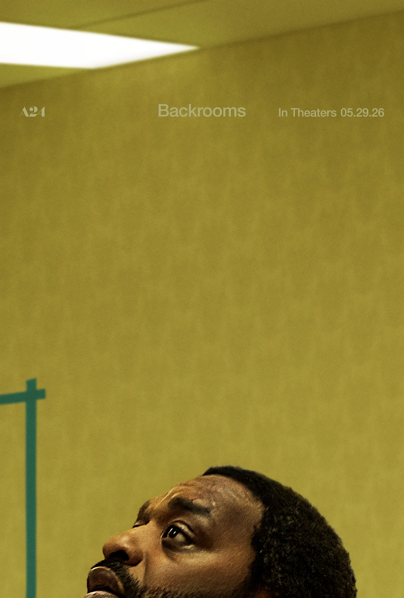

The Backrooms
Director: Kane Parsons • Year: 2026 • Release: May 2026 • Genre: Found Footage / Horror / Body Horror / Psychological Horror
First Reaction
The Backrooms is one of those movies that sticks with you long after the credits roll. Not because it has the biggest scares. Not because it has some unforgettable monster, but because it leaves you thinking.
The entire movie feels unsettling. At times it's shot in a voyeuristic style that immediately reminded me of films like Blair Witch, Cloverfield, and Paranormal Activity. It feels like you're watching footage you were never meant to see. Those moments create a sense of realism that makes everything feel uncomfortable and intimate.
But the movie doesn't stay there.
It regularly shifts back into more traditional cinematic film making with wider shots, cleaner compositions, and a much more deliberate visual style. What's interesting is that the uneasiness never goes away when it makes that transition.
The found-footage style makes you uncomfortable because it feels real. The cinematic style makes you uncomfortable because the world itself feels wrong. No matter which approach the film is using, there's this constant feeling that something is off.
At times it reminded me of The Cell mixed with Inception, creating this strange feeling where you're never completely sure if you're watching reality, memory, trauma, or something in between.
I've never really played the Backrooms games, so I can't speak on how closely it follows the source material. I know the basic concept of endless hallways and strange rooms, but what surprised me was how psychological the movie turned out to be.
This isn't really a movie about a monster. It's a movie about people. More specifically, what's going on inside them. Clark, Mary, and the Possibility of Madness. The story follows Clark, a man struggling with alcoholism, isolation, and a failed marriage, and Mary, the therapist who enters the Backrooms in an attempt to save him.
At least that's what the movie tells us on the surface. The deeper I got into the film, the less convinced I became that we were watching a simple rescue story.
Mary has her own trauma. Her mother struggled with severe mental illness and paranoia, and those experiences clearly shaped who she became. As the movie progresses, it almost feels like Clark and Mary are exploring different sides of the same problem.
Clark is terrified of being hurt. Mary is terrified of becoming her mother.
Different fears.
Same prison.
The more I thought about it after leaving the theater, the more I wondered if Mary was actually entering another dimension at all.
Or was she entering Clark's mind?
Or maybe the more terrifying possibility is that Clark invited her into his madness.
There's a point where Clark desperately tries to explain what the Backrooms are, but he can't really do it. He understands enough to know it's there, but not enough to fully explain it. That felt important to me.
Almost like someone trying to explain depression, addiction, grief, or trauma to another person. They know it's real. They know it exists. But putting it into words is almost impossible. Clark himself tells her, “It’s like trying to describe a dog to someone who has never seen a dog”. They can try to imagine it, but they wont fully see it.
The more Mary follows him, the more she starts experiencing what he experiences. Maybe she's saving him. Maybe she's getting lost with him.
The official description of the movie says Mary enters the Backrooms to save Clark.
After watching the film, I started wondering if they ever really left the therapy session at all.
The Maze
The deeper Clark goes into the Backrooms, the more I started thinking about the idea of a maze. Not just a physical maze. A mental one. It reminded me of The Shining. Not because the stories are the same, but because both use a maze as a symbol of a mind losing itself. In The Shining, Jack Torrance literally runs through a maze as his sanity collapses around him. The maze isn't just a location. It's a reflection of what's happening inside him.
The Backrooms felt very similar. Clark keeps trying to find answers. How do I fix myself? How do I stop pushing people away? How do I stop running from pain? How do I stop becoming the person I'm afraid of becoming? And every answer seems to lead him right back where he started.
The maze doesn't feel like it's trapping Clark. It feels like Clark is trapping Clark. You can't escape yourself. You can't outrun your mistakes. You can't outrun your trauma. Eventually, you're forced to face it. Or become it.
The more I thought about it, the more the Backrooms felt less like a place and more like a prison built from the things Clark refuses to confront.
The Monster
One of the most fascinating aspects of the movie is the creature that resembles Clark himself. There's a conversation where Clark talks about how he doesn't know how to change. He doesn't know how to fix the parts of himself that keep destroying his relationships.
Mary doesn't really have an answer. Then later, when the creature appears, Clark almost seems comforted by it. Maybe he's comforting himself.
There's a moment where he appears relieved by the idea that he doesn't have to change. That scene completely changed how I viewed the movie. The more I thought about it afterward, the more I wondered if the monster wasn’t chasing Clark at all.
Maybe the monster is Clark. Not literally. But emotionally. The version of himself that he is trying to kill. The version that keeps pushing people away. The version that would rather stay trapped than confront its self. The version that's comfortable in its own misery. Eventually that version consumes him.
The movie never comes out and says that, but it gives you enough pieces to make you wonder.
The Window He Couldn't Close
One line stuck with me more than almost anything else in the movie. Clark leaves a message for Mary saying he has opened a window that he can't close. The movie presents it as a discovery.
But what if it's a confession?
What if Clark isn't talking about another dimension? What if he's talking about himself? What if opening that window was the moment he crossed a line he couldn't come back from?
The idea of this possibility stayed with me.
Especially because we know Clark is already unstable. We know he's struggling. We know he's dealing with addiction, isolation, and a collapsing marriage. The more I thought about that line, the darker it became.
Cat, Bobby, and the People in the Backrooms
Cat, Bobby, (The two young kids that work in his failing furniture store) and the People in the Backrooms. This is where my theories really started going into overdrive. Throughout the movie, we spend time with Cat and Bobby. The film never outright says Clark harmed them, and I'm not claiming that's what happened. The movie gives you enough pieces that it's hard not to start asking questions.
The more I thought about Cat and Bobby, the more I started thinking about the people trapped in the Backrooms. Clark tells us they aren't really people anymore. They're memories. Copies. Recreations that aren't quite right. That explanation should have answered the question.
Instead, it created more.
Because if these people are memories, whose memories are they? Why are they there? Why those people? The movie never really tells us. Then you start looking at everything else. Clark is struggling with addiction. He's isolated. He's going through a divorce, but the movie never really tells us how long that's been happening or what led to it. We only know that it's weighing heavily on him. Then there's the severed head of Cat in the fridge. Then there's the message where Clark tells Mary that he's opened a window he can't close. Did he open it by killing Cat and Bobby? Is this the moment he realized he invited them in the backrooms my mental space. They know too much.
Then there's the creature that looks like Clark himself. That's when a darker theory started forming in my head. What if the people trapped in the Backrooms aren't random? What if they're previous victims? What if Clark didn't just lose his marriage? What if he lost his mind?
The movie never confirms that interpretation, and honestly I wouldn't want it to. Once that idea entered my head, it became difficult to ignore. The more I thought about it, the more the Backrooms stopped feeling like a supernatural maze and started feeling like a prison built from the consequences of Clark's actions.
Maybe I'm completely wrong, but that's exactly why I found the movie so fascinating. It leaves enough room for you to build your own interpretation.
The Visuals Might Be Distracting You
Something else occurred to me after I left the theater. The movie constantly gives your eyes something to focus on. The strange architecture, endless hallways, creatures, impossible spaces, lighting, framing, unsettling visuals.
Looking back, I almost wonder if that's intentional. The movie keeps your eyes busy while Clark and Mary are having conversations that may contain some of the biggest clues in the entire story. The first viewing felt like getting lost in the maze. The second viewing would probably feel like trying to understand why the maze exists in the first place.
There were several moments where I found myself so focused on what I was seeing that I wasn't paying enough attention to what was being said. I think some of those conversations may be the key to understanding the movie.
Final Thoughts
The Backrooms isn't a movie that hands you answers. It's a movie that hands you questions. Some people are going to hate that.
Others are going to love it.
I found myself thinking about it long after it ended, replaying scenes, connecting dialogue, staring at the poster, and trying to decide what I thought actually happened.
Whether my interpretation is right or completely wrong doesn't really matter. The movie succeeded because it got me thinking. And sometimes that's more unsettling than any monster hiding in the dark.
The Discussion After the Movie
Everybody walks away with a different experience. Some people focus on the story. Some focus on the characters. Some focus on the scares. And sometimes they catch things that I completely missed. Here are the rest of everyone’s thoughts after the movie.
Fox's Thoughts - "I thought a few parts of the movie were really trippy. The whole idea of no-clipping isn't really possible, so seeing that happen was kind of weird and cool at the same time.
One of the strangest parts was when Mary was being chased by a copy of Clark and ended up in that room that didn't seem to have a bottom. That was really trippy.
I also thought it was interesting that the longer somebody stays in the Backrooms, the more the Backrooms seems to learn about them. It starts copying their personality, their thoughts, and eventually creates copies of them.
Some parts were pretty creepy too. The copy of Clark meeting the real Clark and then biting into his neck was creepy. Another weird scene was when Clark talked about eating the copies and cut hair from one of them to put on Mary while pretending she was his wife.
It felt kind of like a thriller chase movie at times.
I'd give it a 7 out of 10."
Liz's Thoughts - "I thought the movie was really good. Based on the trailer, it wasn't really what I was expecting, but it ended up being a much more interesting movie than I thought it was going to be.
The psychological side of the story was probably the most interesting part for me. It wasn't just about monsters or jump scares. It made you think about what was really happening and what everything meant."
Kinley's Thoughts - "I thought the beginning was really dragged out and took too long to get to the main point of the movie. A lot of the things that happened early on felt like they were going to matter more than they actually did by the end.
Then when the movie finally got to what felt like the main point, it rushed through it way too fast.
There also weren't really many jump scares. Most of the tension came from sounds, atmosphere, and not knowing what was around the corner. You hardly ever saw the monster, and when you did it wasn't for very long.
A lot of the backstory and setup felt important while I was watching it, but by the end some of it didn't seem to matter as much as I expected it would."
Rating
8/10
Audience Feedback
I’d love to hear your feedback and thoughts on the film. Email me at daniel@nobodycritics.com.